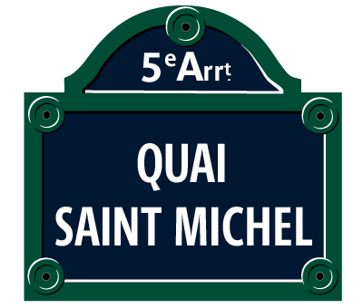
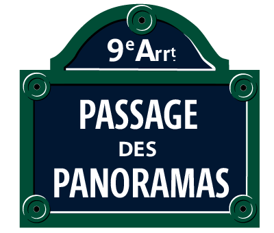
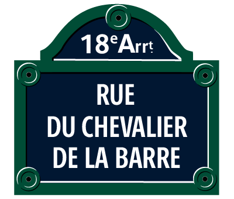
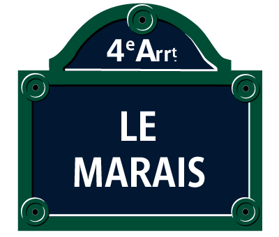
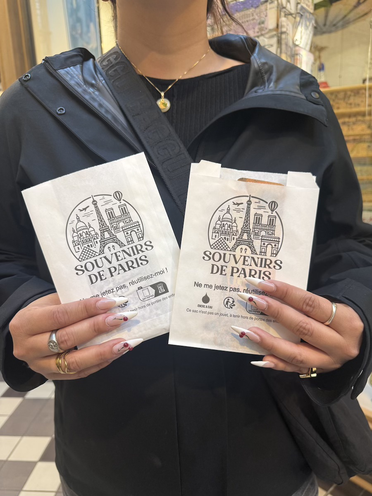
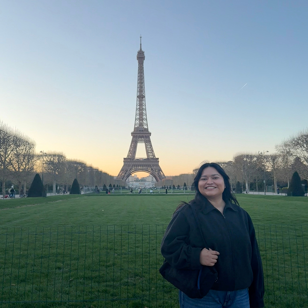

This is my personal list of the streets I shop on every time I’m in Paris. These are my go-to spots for souvenirs, that offer the perfect mix of knick knacks for my friends and family.
While there are souvenir shops all over Paris, they can be all over the place having you run from one arrondissement to another. What I love about these specific streets is that you can find multiple shops all in one street. From the budget-friendly ones to the iconic spots unique to Paris such as Shakespeare & Co!
To give you a full picture, I’m breaking down my top three picks by Location, Hours, Prices, Staff Friendliness, Store Variety, Store Sizes, and the specific Products they carry. I’ve also thrown in a bonus section for The Marais. It's definitely more of a splurge area than a budget hub, but it's an honorable mention for when you want to look at something a little more curated (even if you're just window shopping).
Hi, I'm Emmily! I’m a 21-year-old college student who basically loves traveling to Paris whenever I can. I’ve been to the city five times since 2021, including a full summer studying abroad and a recent trip this past March 2026. So I can officially say, I’ve got my go to spots for souvenir shopping.
I’m obsessed with finding the perfect Parisian souvenirs, but I’ve learned the hard way that you can waste an entire day running between arrondissements if you don't have a plan. I wrote this because I’ve spent countless hours looking for the “perfect souvenir” based on what TikTok has shown me. However, with the help of TikTok and my own wandering around the streets of Paris, I’ve found the best mix of budget-friendly spots.
